Maestro: Javier Osorio Figueroa | Alumno: Tomás Toledo
Introducción
Esta es la página donde documentaré acerca de mi progreso en la materia de producción electrónica.
Producción Electrónica
¿Qué hago en producción electrónica?
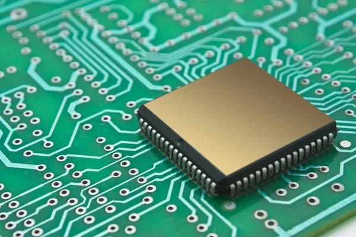
La materia de producción electrónica es una materia enfocada en diseñar y fabricar componentes electrónicos desde cero, desde el planteamiento del proyecto hasta la fabricación de placas. Aquí abarco desde la elaboración de esquemáticos y el diseño de placas en software como KiCad o Altium, hasta el uso de herramientas y software especializado para el corte, soldado y ensamblaje de dichas placas.
KiCad
Resumen: ¿Qué es KiCad?
KiCad es un paquete de software de código abierto para la automatización del diseño electrónico (EDA). Los programas permiten la captura de esquemas y el diseño de placas de circuito impreso (PCB) con salida en formato Gerber e IPC-2581 . El paquete funciona en Windows, Linux y macOS y está licenciado bajo la licencia GNU GPL v3 .
Fuente: https://www.kicad.org/about/kicad/Menu
Menu principal de KiCad
Al iniciar un proyecto de KiCad podemos observar en la barra lateral de KiCad los editores que tenemos disponibles, como lo es el editor de esquemas, el editor de simbolos o el editor de placas.
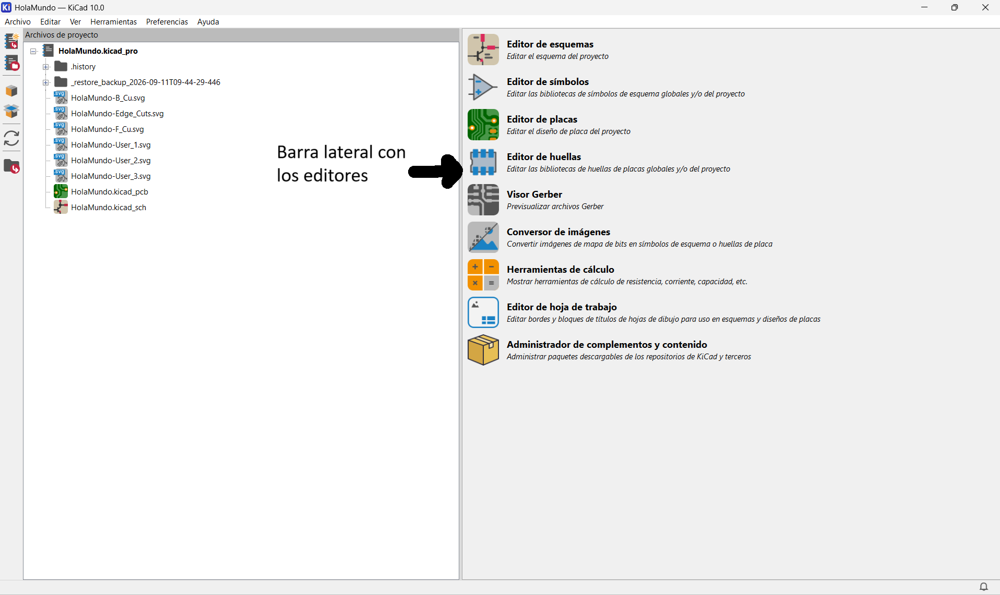
Además de eso tambien encontramos los menus usuales de "Archivo" donde podemos encontrar para abrir, guardar o clonar algun documento que tengamos; "Editar"para copiar, pegar o cortar; o "Herramientas" entre otras; como es usual encontrar en cualquier aplicación con creación de archivos.
KidCad FabLib
¿Cómo instalar KidCad FabLib?
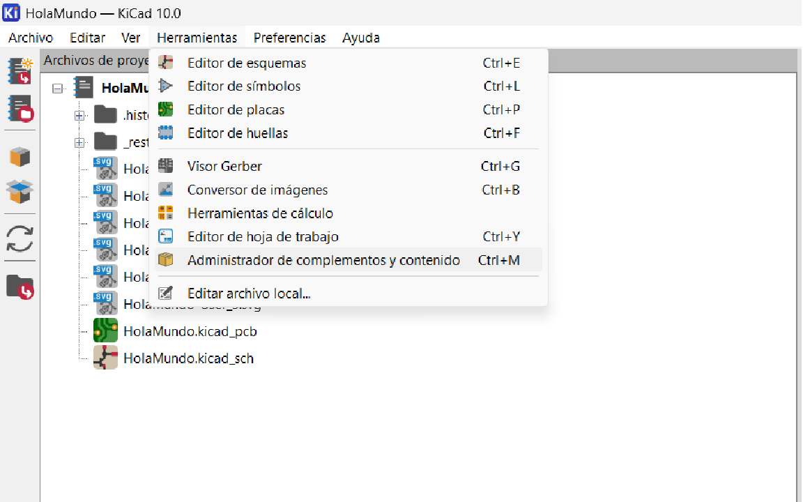
Abrimos el menu de Herramientas buscando el "Administrador de Complementos y Contenido" y lo abrimos, lo cual nos abrira un menu.
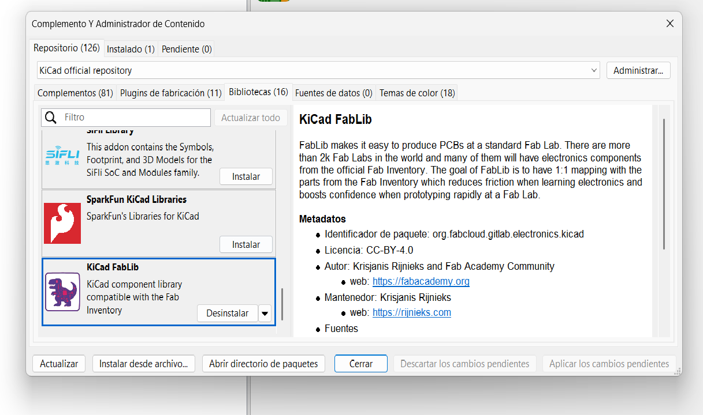
En dicho menu vamos a buscar en el filtro la libreria de "KidCd FabLib" y la instalamos. Una vez instalada vamos a reiniciar el programa para asegurarnos de poder utilizar esta libreria.
Esquemas
Editor de esquemas
Lo primero que vamos a ocupar es el editor de esquemas el cual podemos abrir desde el menu lateral en el inicio o en la barra de Herramientas en la parte superior.
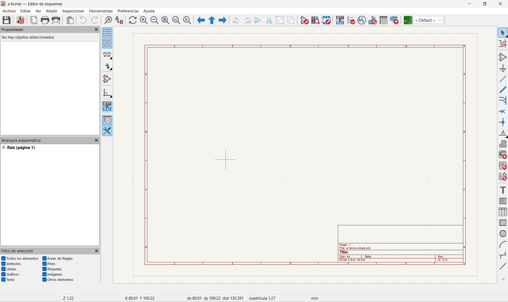
Una vez abierto nos desplegara la ventana de la anterior imagen, en donde podremos crear, editar y conectar todos nuestros diagramas para realizar un circuito.
HerramientasE
Herramientas del editor de esquemas
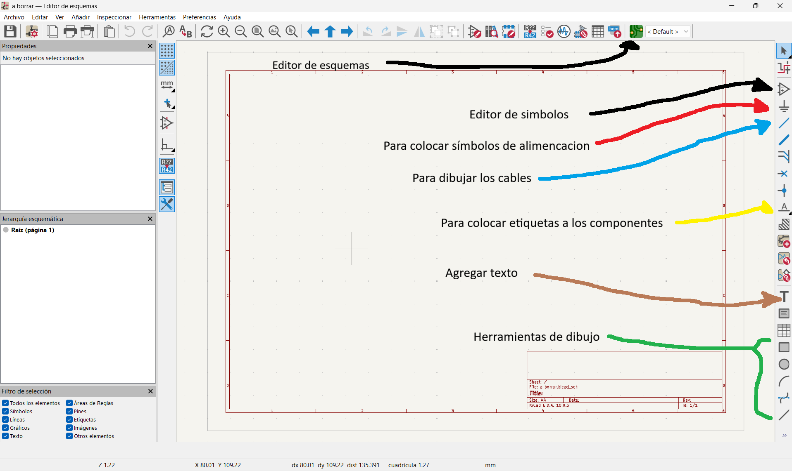
En la barra lateral dentro del editor de esquemás podemos observar diversas herramientas las cuales nos pueden ayudar a identificar e insertar los elementos necesarios para nuestro diagrama
Componentes
¿Cómo agregar un componente?
La parte más importante del editor de esquemas es para poder agregar los componentes que deseamos utilizar. Esto lo podemos hacer de dos maneras, utilizando el comando de la tecla "A" o pulsando el icono de "Colocar Simbolos" que vimos en la barra lateral del editor de esquemas en la parte anterior. Esto nos abrira la siguiente ventana:
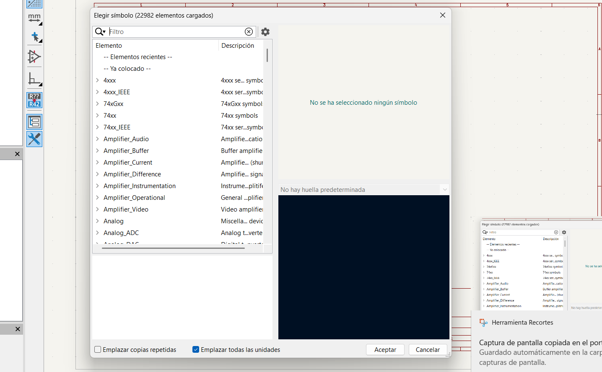
Una vez abierta esta ventana desde el filtro podremos buscar cualquier componente que deseemos insertar simplemente escribiendolo. Tambien es importante que busquemos insertar los componentes de nuestra libreria que insertamos llamada "PCM_fab"
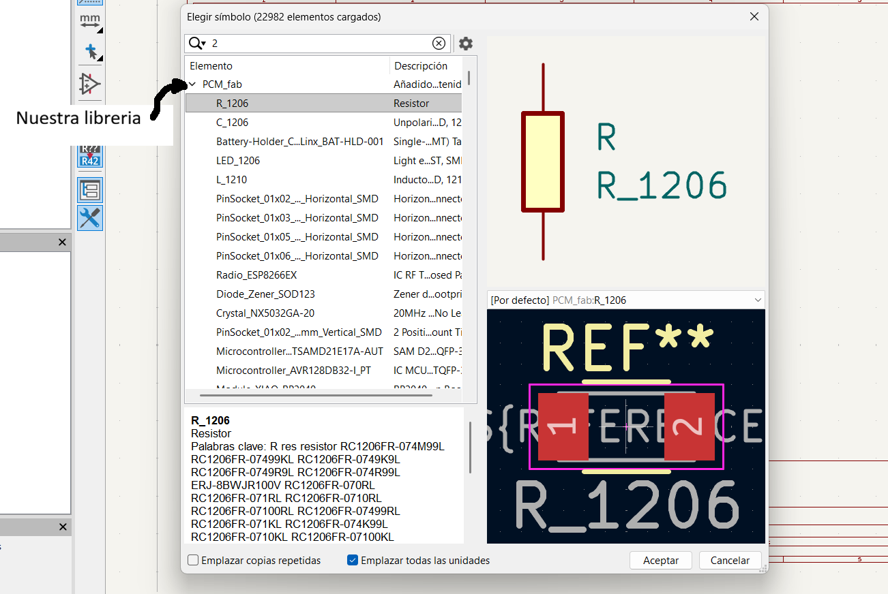
Tambien es importante que verifiquemos que el compomnente que deseemos insertar tenga un footprint ya determiando, debido a que es probable que no podamos encontrar facilmente los componentes que no posean un footprint, es lo que se ve a continuación.
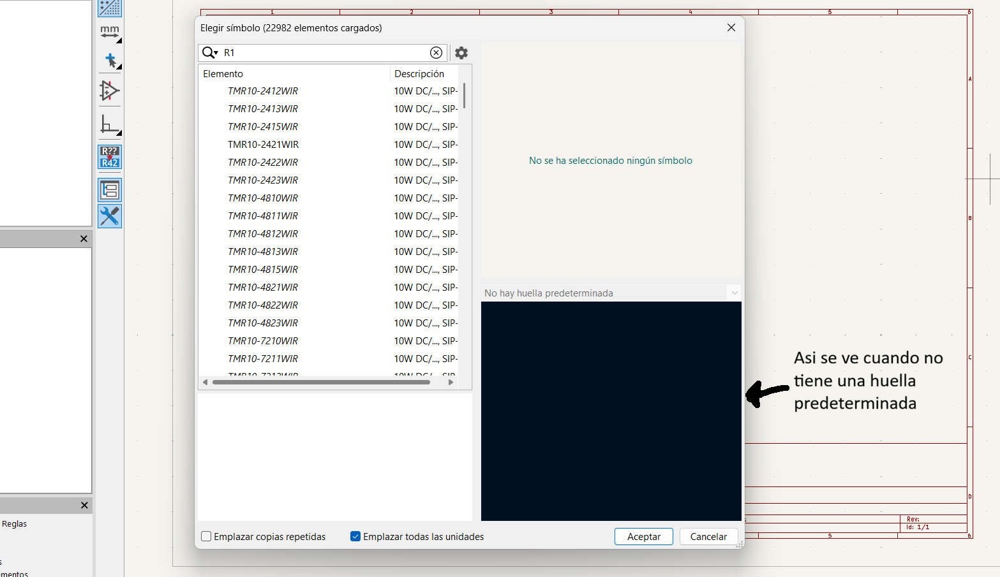
Placas
Editor de Placas
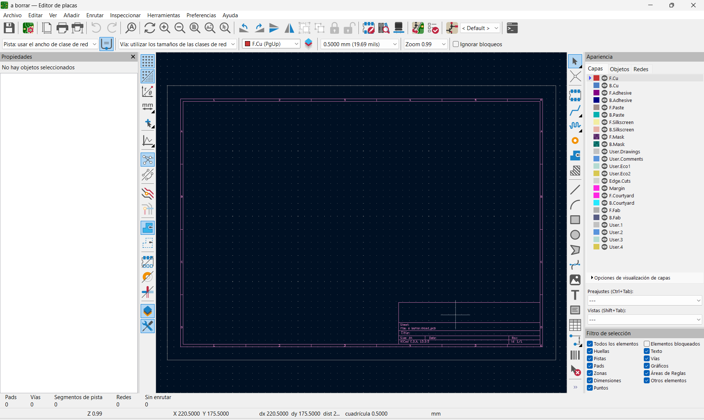
Por otro lado tenemos tambien el editor de placas el cual, al igual que el editor de esquemas, podemos abrir desde el menu lateral en el inicio o en la barra de Herramientas en la parte superior, pero a su vez tambien podemos ingresar desde el editor de esquemas al pulsar el icono señalado en la siguiente imamgen.
Componentes
¿Cómo importar los componentes del editor de esquemas?
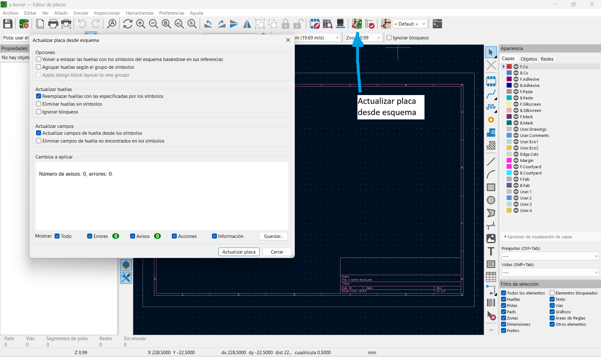
Al ya tener abierta la pestaña del editor de placas vamos a necesitar insertar los componentes del diagrama que ya creamos con anterioridad. Para esto vamos a buscar el icono de "Actualizar placa desde esquema" el cual nos va a abrir otra ventanita en la cual vamos a picar el boton de "Actualizar placa", con lo que ya tendriamos nuestros componentes inserador en esta"
HerramientasP
Herramientas del editor de placas
Una vez que tengamos nuestros componentes en el editor de placas nos vamos a encontrar en la barra lateral derecha diversas herramientas para poder diseñar nuestra placa a nuestro gusto.
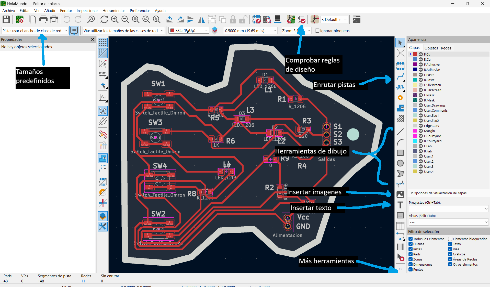
Pero tambien es importante que dependiendo de nos requisitos y limitaciones que tengamos ajustemos las reglas de diseño. Parra poder ajustar estar reglas vamos a pulsar un pequeño menu desplegable en la parte superior izquierda para despues de eso pulsar el apartado de "Editar tamaños predefinidos" lo cual nos abrira una ventana en la cual buscaremos "